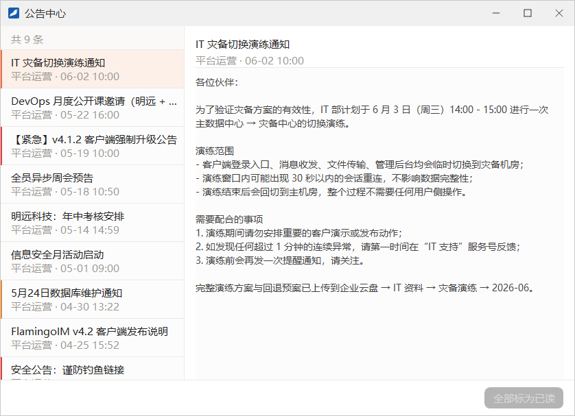

公告与通知
管理员在管理控制台发布公告后，收到公告的员工会在桌面右下角看到提示，所有公告都可以在公告中心里随时查阅。本章介绍这两处界面的用法。
- 适用：全体员工
- 公告由管理员发布，员工只能查看
新公告提示
有新公告发布时，屏幕右下角会弹出「新公告」窗口，不必打开主面板也能第一时间看到：

- 顶部左侧是来源，右侧是公告的级别：通知（灰色）、提醒（琥珀色）或 警告（红色）。
- 中间是公告标题和正文。
- 点 知道了 关闭提示窗。这条公告仍然保持未读，之后可以在公告中心里查看。
- 点 查看全部 打开公告中心。
上一条提示还没关闭时又来了新公告，提示窗的内容会直接换成新的那一条。
公告中心
公告中心汇总了你收到的全部公告。打开方式有两种：
- 点主面板头像下方的铃铛按钮。有未读公告时，铃铛上显示未读条数，鼠标停在上面会提示「你有 N 条新公告」；
- 点主面板左下角的 ≡，在系统菜单中选 公告与通知。

- 左侧列表顶部显示公告总数，有未读公告时还会显示未读条数，如「共 9 条 · 2 条未读」。
- 点左侧的一条公告，右侧显示它的标题、发布者、发布时间和完整正文。打开过的公告自动标为已读。
- 需要一次清除所有未读时，点右下角的 全部标为已读（没有未读公告时按钮为灰色）。
列表中的几种标记：
| 标记 | 含义 |
|---|---|
| 标题左侧的小圆点 | 这条公告还没有读过 |
| 标题前的「[置顶]」 | 管理员把这条公告置顶了 |
| 左边缘的琥珀色竖条 | 级别为「提醒」的公告 |
| 左边缘的红色竖条 | 级别为「警告」的公告 |
| 浅色底与橙色竖条 | 当前正在右侧查看的那一条 |
公告正文里的网址可以直接点击打开。
群公告不在这里公告中心只收管理员在管理控制台发布的公告。群主或管理员在群里发布的群公告显示在群聊窗口里，见「群聊」。
管理员如何发布公告公告可以发给全部企业，也可以只发给指定的企业、部门或员工，操作方法见「平台公告」。